1. 手機直立首屏 before(V0575a) / after(V0575b)（390×844）


| 視窗 | 外圈房外背景 0575a→0575b | 視覺門寬 |
|---|---|---|
| 390×844 | ~18px → 0px | 2 格深塊 → 1.4 格(123px) |
| 393×852 | ~19px → 0px | — |
| 430×932 | ~26px → 0px | — |
外殼為純視覺，延伸區不新增 placeable cells、不改 Grid/存檔；以細牆腳線/收邊區分可玩區。可 zoom-out 看整房、zoom-in pan 查看外圍。每張指標見 evidence/v0575b/metrics.json。
2. 入口門 before / after（近景）
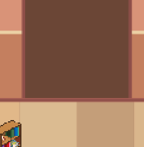
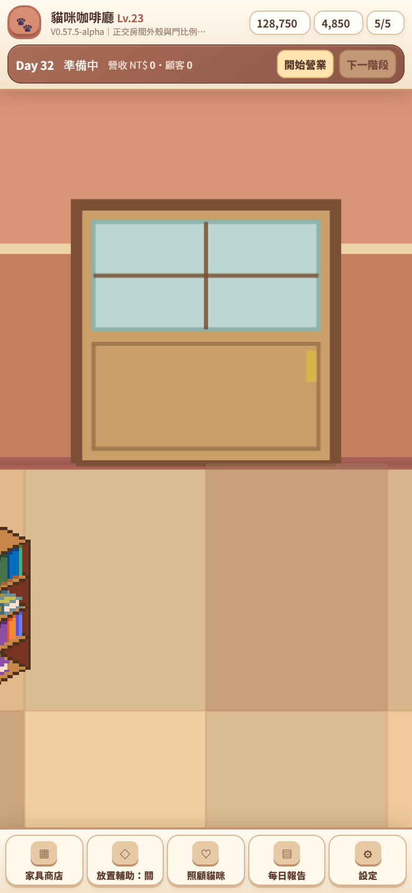
邏輯入口維持兩格 x7-8、entryPoint (8,0)/staging (8,1)、x9 牆面、舊存檔入口 (8,7)/(9,7) 皆不變；只縮小/美化「玩家看到的門」。
3. Zoom/Pan 回歸（核心凍結，仍正常）
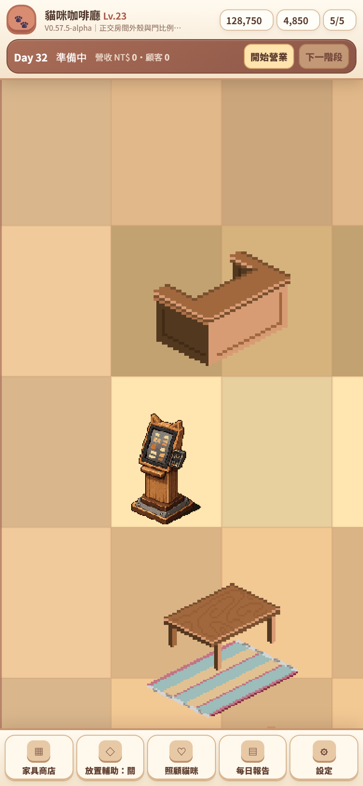
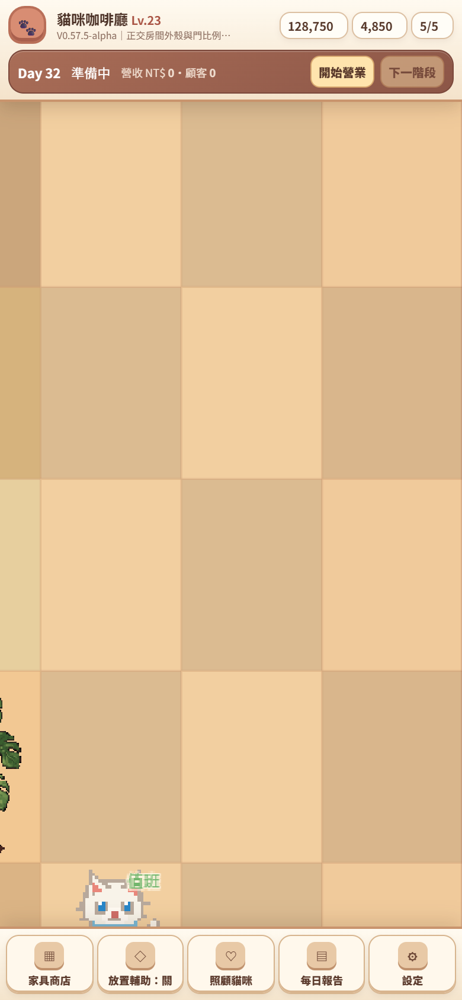
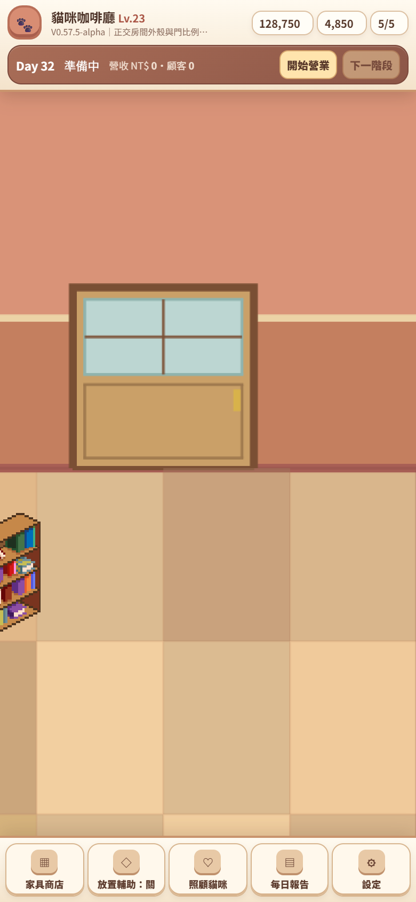
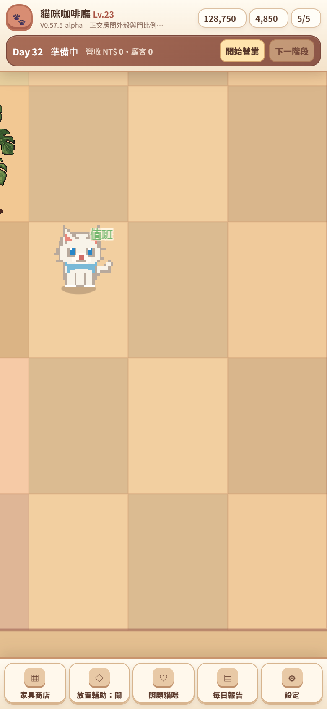
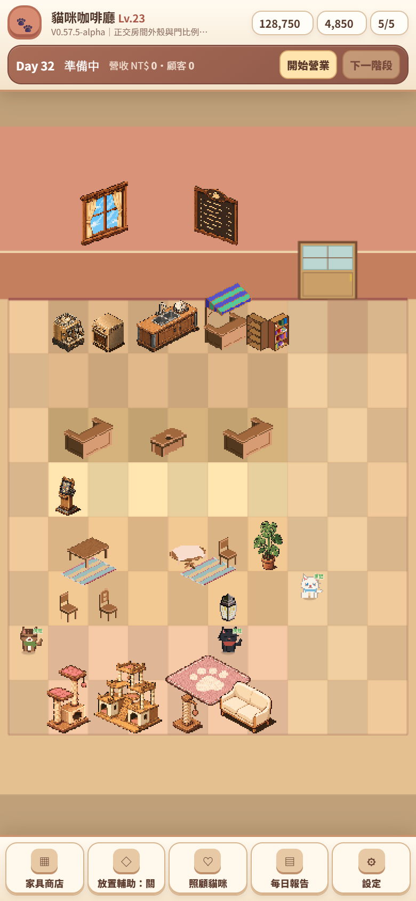
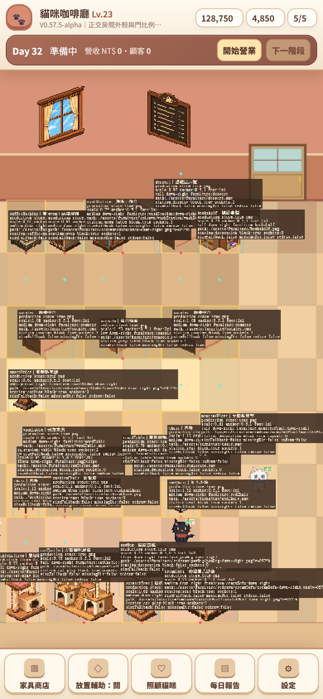
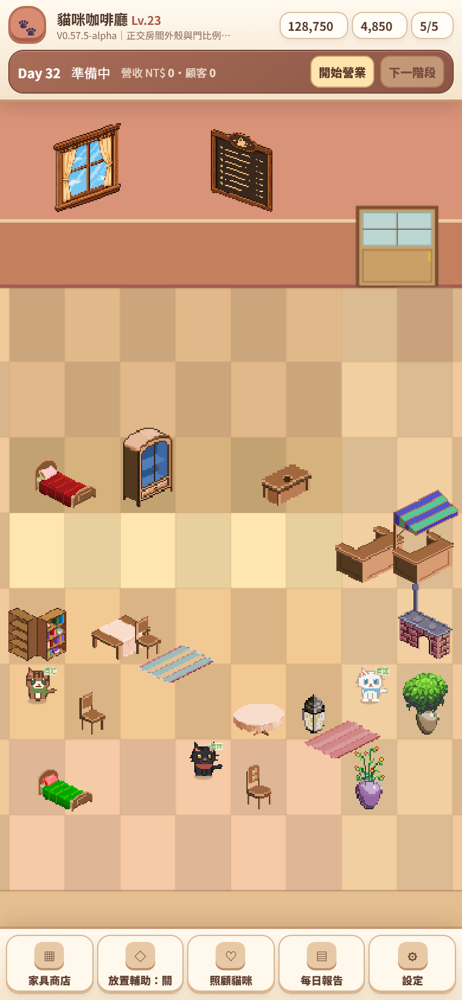
CameraController 核心（viewCentre/pan/clamp）未修改；real-browser 真實拖曳仍改變 scrollX/Y、四邊 clamp、minZoom 整房。
4. 其他尺寸 / 桌面
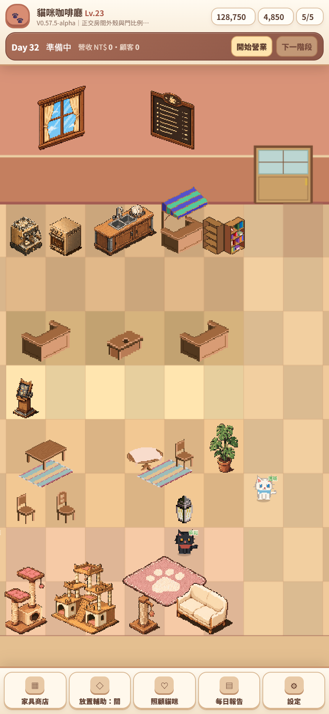
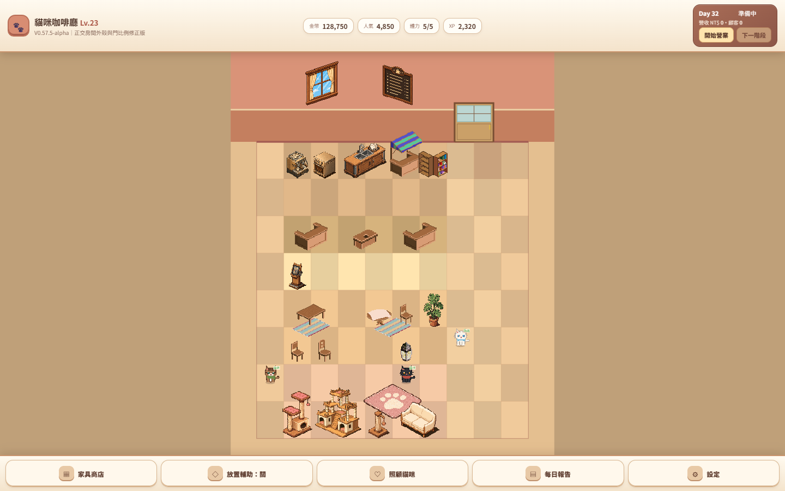
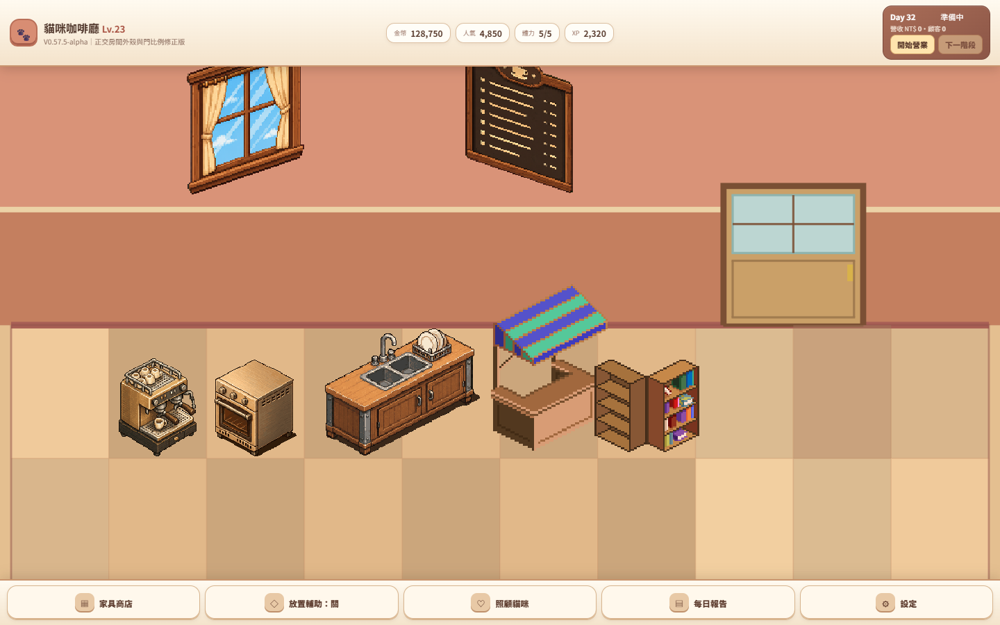
家具仍等角 Placeholder、門為 Prototype（正式素材待 ART-0576）。詳見 V0575B 結果。